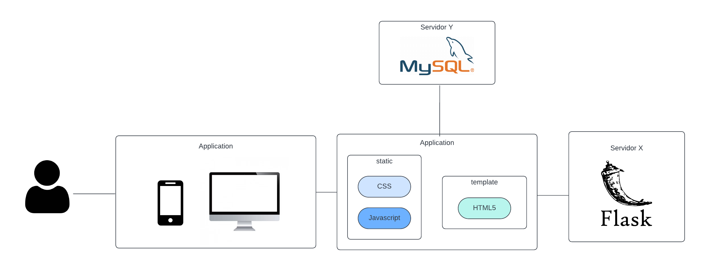

System Metaphor, como o próprio nome já diz, é uma metáfora de um sistema. Metáfora no sentido de que consegue resumir um aplicação completa e complexa por meio de alguns poucos elementos agrupados de forma lógica a qual pode ser bem entendida apenas de se olhar. O DayTrack, pelo o que vemos no diagrama, é acessado pelo usuário por meio de um browser acessado via celular ou computador. O sistema por sua vez é composto por suas páginas, estilização e lógica.
A aplicação fará conexão com dois servidores: um para manter o controle de rotas (Flask) e outro para guardar dados da aplicação.
